Squadrons, batch 1
The first of five batches: 142 and 149 side by side in one app. Nothing is built yet. This page shows what was agreed for batch 1, drawn on the real app. Pink "New" marks the pieces drawn for the first time; everything else is drawn as you approved it.
Look at now
Two things you will notice
- The demo starts fresh once. On the day batch 1 goes live, every browser's demo data is cleared and both squadrons are set up again. Changes you made in the demo are lost.
- Sign out restarts the app. You see the start-up claw for a moment after "Sign out". Without it, a 149 man signing in on the same PC after a 142 man would be shown 142's Leave War and Tracker.
What batch 1 gives you
- 142 and 149, each with its own schedule, Logic (crew rest included), Leave War, Tracker, Quals and Inputs.
- Each person has one home squadron. He files inputs and leave only there. Inputs, Quals, the Leave War and the Tracker always show his own squadron.
- An admin of a squadron can give a man of the other squadron View only, never as a scheduler. Only a squadron's own admins, or a master admin, can make someone its admin.
- Anyone who may see more than one schedule gets the "142 ▾" button. The schedule pages and Logic follow his pick.
- Admin → Squadrons: each squadron and its place, and each place's time zone, picked by name and shown as GMT+X.
- Squadrons at one place share one public-holiday list, and each keeps its own Off days.
- Prints and exports carry the number of the schedule printed, never a fixed "142".
1 · The "142 ▾" button and its Schedules menu
Saber can see both schedules, so the TALON mark becomes a button. The menu lists 142 and 149 only (detachments come in batch 2). On a phone it opens as a sheet from the top, the page dimmed under it.

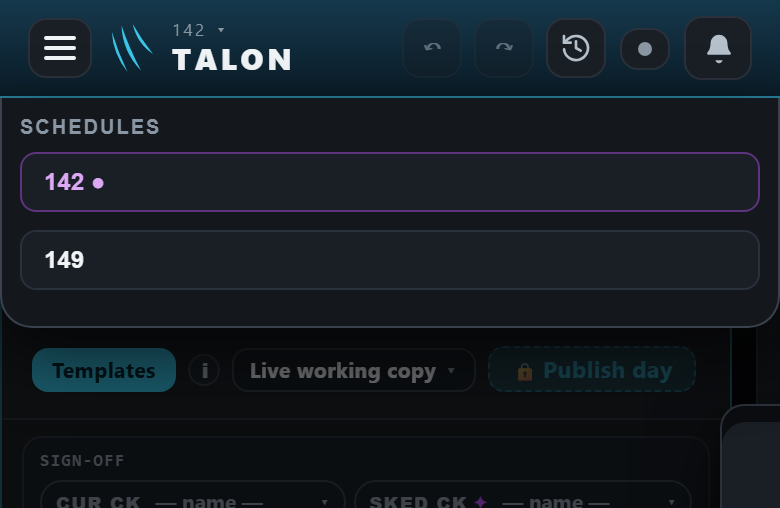
2 · The board names its squadron
A small grey "142" beside the day title on the Scheduler Board's bar, so a picture of the board says whose it is. Nothing else in the bar moves.

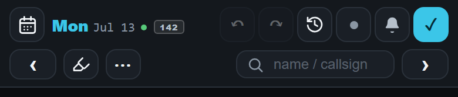
3 · Admin → Squadrons
Each squadron with its place and time zone. New: "+ New squadron", which only a master admin sees. The detachment lists you approved come with batch 2.
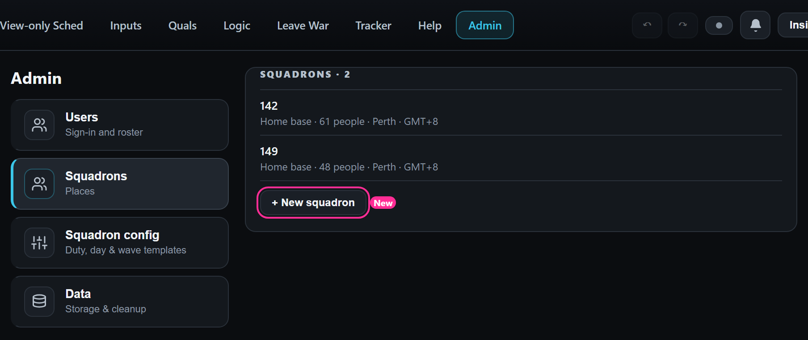
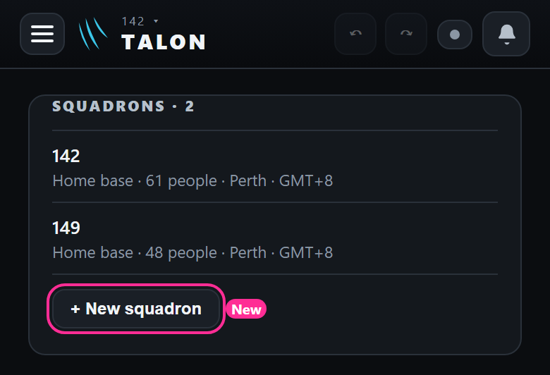
4 · A squadron's place, and its time zone
149's row opened: its place and the time zone chosen by name, "Perth · GMT+8". A change is saved at once and counts from the next day. The line about the squadrons planning each other's people waits for borrowing (batch 3), so it is not shown yet.
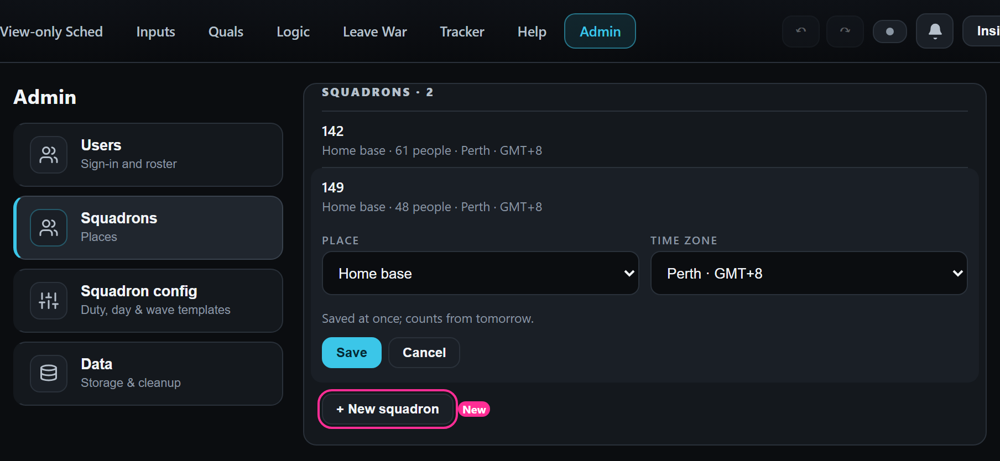
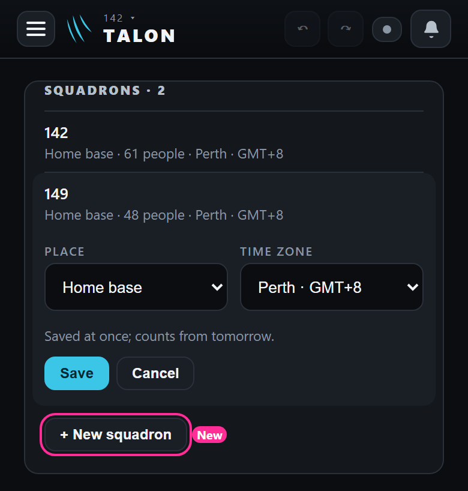
5 · Request access asks the squadron first
A person not yet on a list picks his squadron first. Only that squadron's admins get the request, and their bell tells them.


6 · A person's row on Admin → Users
Saber's row: "Other squadrons · 149 · View", as approved. New: the line "Home squadron · 142" above it.
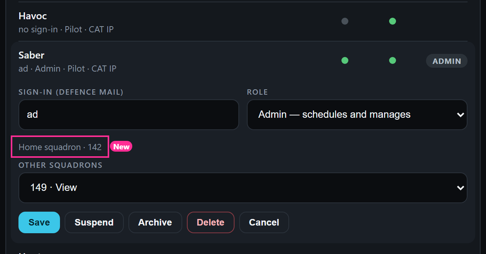
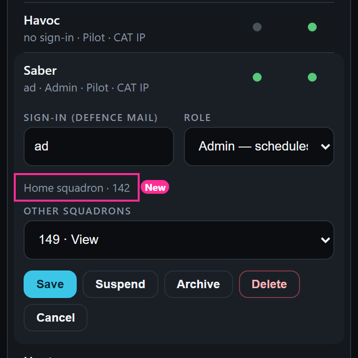
7 · Adding a person
New: a "Home squadron" choice at the top of Add a person, set to the admin's own squadron to start.
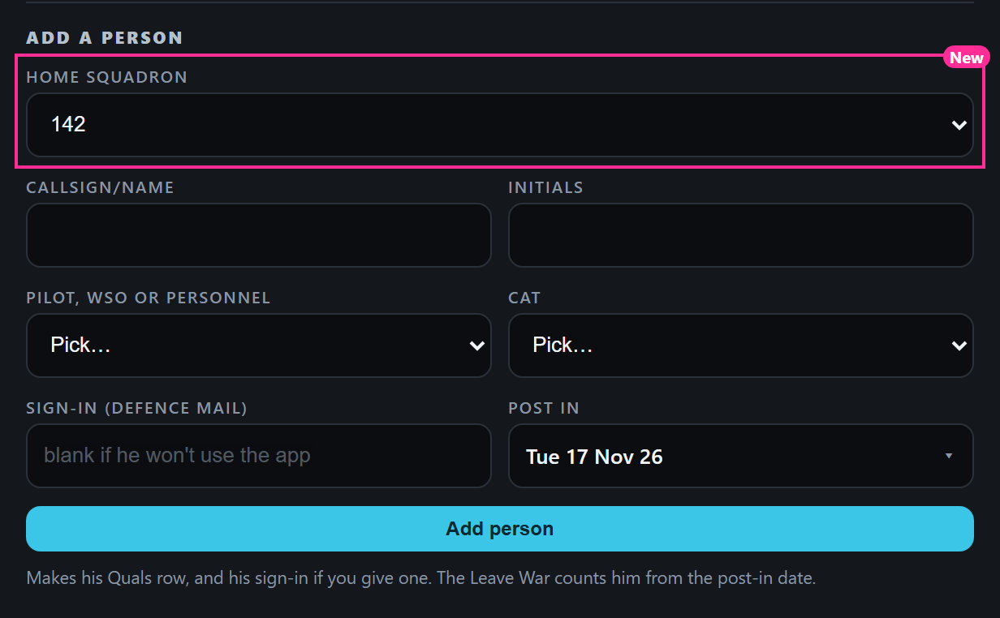
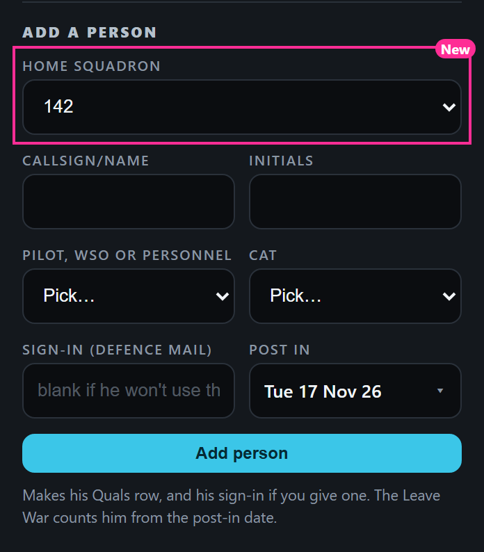
8 · One holiday list at one place
149's admin adds a public holiday. The amber warning, as approved, names each squadron's published days the holiday puts out of date, and both squadrons' admins are told. New: the grey line "Off days stay each squadron's own".
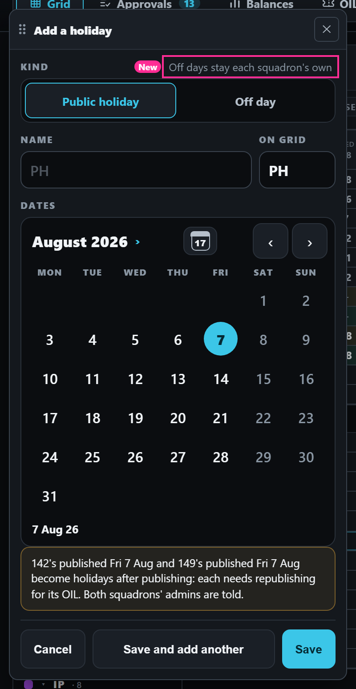
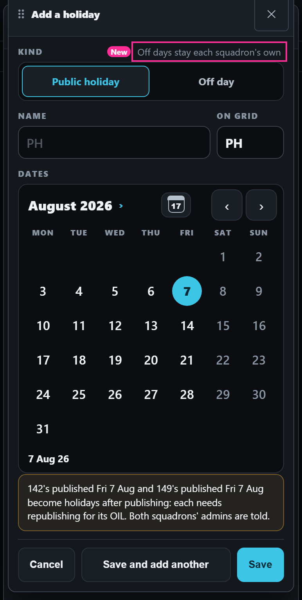
Waits for later batches
- 2 · Detachments: making one, DET and "+ Put people on it" (one DET for each man), its schedule, one man in one place, a man's rest, hours and OIL followed across places, Close detachment.
- 3 · Borrowing and shared waves: the other squadron's free men, the automatic "ATTACH" row at home, clash checks across both squadrons, "Join a 149 wave", the grey "142" badge, signing a shared wave, OIL for a day worked for both.
- 4 · Transfer to Sqn, and Post out from Admin → Users.
- 5 · The whole-app check across both squadrons, a detachment and a transfer together.